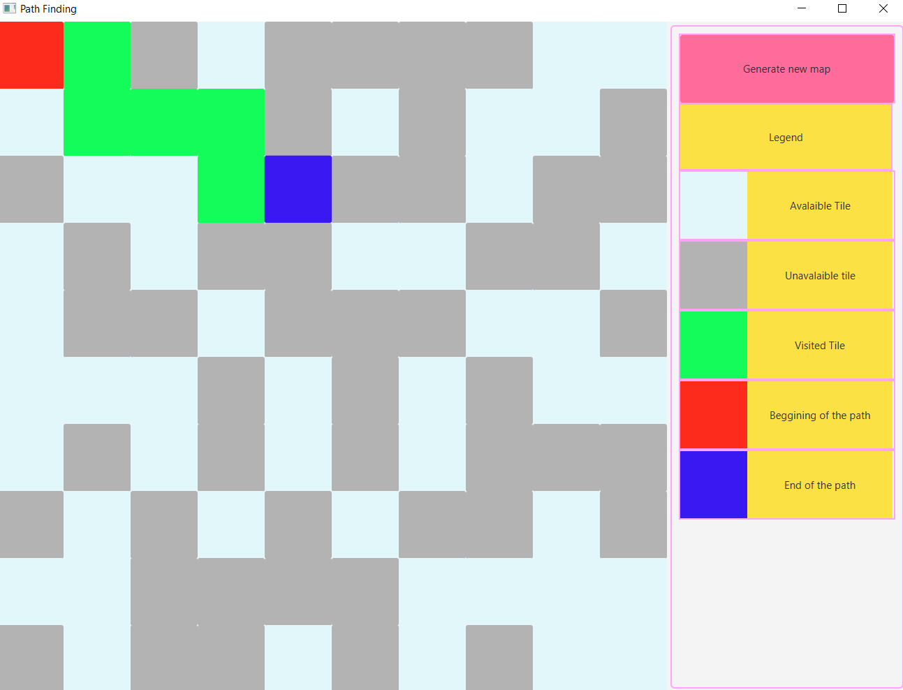
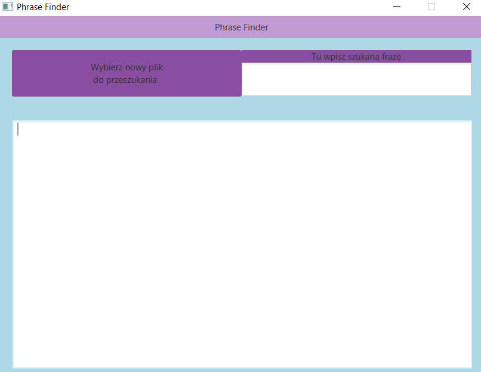
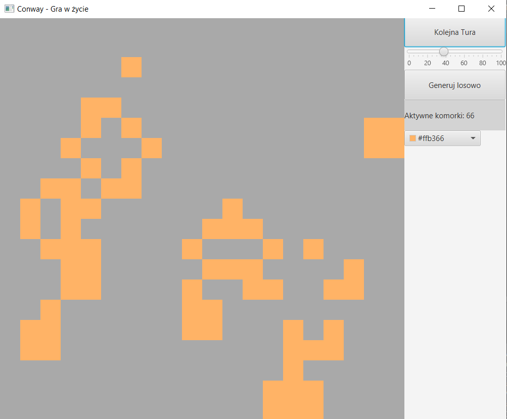

About me
Student of 3rd year of "Computer Science" on PJATK, whose is now looking for the first job in IT. I learn Spring framework in my spare time and improve my english to get in close future certificate
Education
Polsko-Japońska Akademia Technik Komputerowych
2019 - Current Day
Specialization - Programming of business applications
Skills
Current TechStack:
Java 8/11
SQL
HTML5
Node.js
CSS3
Javascript
Git
Programs that I know how to use :

Image editing and creation of graphics for private usage and occasionally for commercial usage of family members
Commonly used to work with several cases
My main IDE since beggining of studies
Sending API request to test REST responses
Creating images of databases
Languages

My native language

At B2 level. Sufficient to read and write documentation
Projects on github
Implementation of Path Finding Algortihm

Made for studies as a part of subject "Algorithms and Data Structures". After I had bought book about JavaFX Framework, I made for this programme simple GUI to make it more complex
Phrase Finder

As name suggest this programme find every appearance of specified word i catalog of files. I wrote this programme to make finding certain variables or words in numerous files easier and faster. Of cource I could find every appearance in other way but i wanted to make something usefull in java for myself
Conway simulator

Implementation of popular game "Game of life" with rules based of these created by John Conway. In this program you can define "alive" cells by mouse and later on by button create next "generation" of living cells. Program was originally created as a part of subject "Fundamentals of computer simulations" as simple example of one of the first topics during semester.